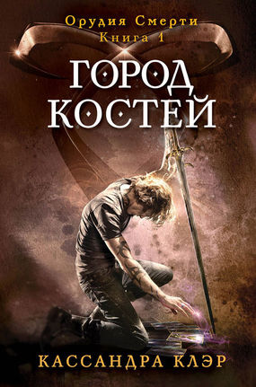
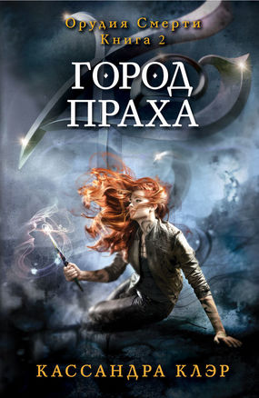
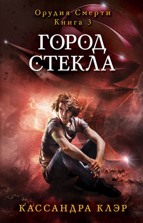
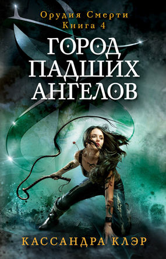
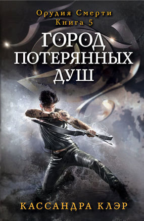
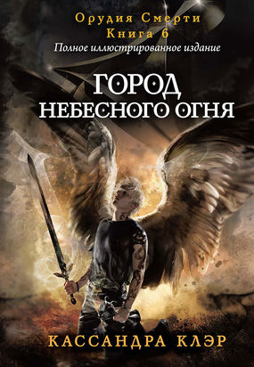

Хроники Сумеречных Охотников
Хроники Сумеречных Охотников(также известная как Сумеречные Охотники), это молодежная франшиза фэнтези книг, состоящая пока из трех серий (десяти романов на момент 2016), и нескольких кратких историй написанных американской писательницей Кассандрой Клэр, вместе с некоторыми сопутствующими книгами, графическим романом, мангой, фильмом, и сериалом.
Каждая из историй рассказывает о сверхъестественном конфликте между Сумеречными Охотниками, группа могущественных гибридов людей и ангелов, и жителей Нижнего Мира, сообщества мифических существ, и их борьбе с демонами.
-
Орудия смерти. Город костей.
 Город Костей — произведение Кассандры Клэр в жанре фэнтези, первая книга в цикле Орудия Смерти. Книга вышла в 2007 году и даёт начало повествованию о приключениях шестнадцатилетней Клариссы "Клэри" Фрэй, столкнувшейся с сокрытым от людских глаз миром Сумеречных Охотников.
Когда Клэри Фрэй отправляется в Клуб Пандемониум в Нью-Йорке, она и не думала, что будет свидетелем убийства. Тем более, что убийство было совершено тремя подростками, покрытыми странными татуировками.
Это первая встреча Клэри с Сумеречными Охотниками — воинами, борющимися против демонов и сохраняющими в узде оборотней и вампиров. Это также ее первое встреча с прекрасным, золотоволосым Джейсом. В течении 24-х часов, Клэри тянет в мир Джейса местью, когда ее мать исчезает и Клэри находит себя атакованной демоном. Но почему демоны буду охотится за какой-то примитивной вроде Клэри? И как она внезапно обрела Виденье? Сумеречные Охотники хотели бы знать...
-
Орудия смерти. Город праха.

Клэри Фрэй просто желает чтобы ее жизнь снова стала нормальной. Но что такое нормальная жизнь когда ты охотящийся на демонов Сумеречный Охотник, твоя мать в коме от зелья, и ты внезапно можешь видеть существ Нижнего Мира как оборотней, вампиров и фэйри? Если Клэри покинет мир Сумеречных Охотников позади, это будет значит больше времени с ее лучшим другом, Саймоном, который становиться больше чем просто друг. Но мир сумеречного Охотника не готов отпустить ее - особенно ее прекрасный, приводящий в ярость, новонайденный брат, Джейс. И единственный шанс помочь ее матери - отследить злого Сумеречного Охотника Валентина, который возможно сумасшедший, определенно злой - и так же ее отец.
Что усложнить все, кто-то из Нью-Йорке убивает детей из Нижнего Мира. Стоит ли Валентин за этими убийствами - и если да, что он собирается делать? Когда второе Орудие Смерти, Меч Смерти, украден, ужасающий Инквизитор прибывает расследовать и фокусируется прямиком на Джейсе. Как Клэри может остановить Валентина если Джейс готов предать все во что он верит ради помощи отцу?
В этом разбивающем сердце сиквеле Города Костей, Кассандра Клэр заманивает своих читателей обратно в захват Нижнего Мира Нью-Йорка, где любовь никогда не в безопасности и сила становится смертельным искушением.
-
Орудия смерти. Город стекла.
 Чтобы спасти жизнь своей матери, Клэри должна отправиться в Город Стекла, древнюю родину Сумеречных Охотников, не обращая внимания на то, что вход в город без разрешения - это незаконно, и нарушение закона может значить смерть. Чтобы ухудшить ситуацию, она узнает что Джейс не хочет чтобы она там была, и ее лучший друг, Саймон, брошен в тюрьму Сумеречными Охотниками, которые глубоко подозревают вампира который может ходить под солнцем.
Так как Клэри раскрывает больше о прошлом ее семьи, она находит союзника в мистическом Сумеречном Охотнике Себастьяне. С Валентином проверяющим свою полную силу чтобы навсегда уничтожить всех Сумеречных Охотников, их единственный шанс победить его - это бороться плечом к плечу вместе с их вечными врагами. Но могут существа Нижнего Мира и Сумеречные Охотники отложить свою ненависть чтобы работать вместе? В то время как Джейс точно понимает скольким он собирается рискнуть ради Клэри, может она использовать свою новые силы чтобы помочь спасти Стеклянный Город — не смотря на цену?
Любовь - это смертный грех и тайны прошлого доказывают смертельное, когда Клэри и Джейс противостоят Валентину в третьей части бестселлера New York Times Орудий Смерти.
-
Орудия смерти. Город падших ангелов.
 Война за Орудия Смерти окончена, и Клэри Фрэй возвращается домой в Нью-Йорк, Ее ждет много нового, волнующего: она учится быть Сумеречным Охотником и использовать ее уникальную силу, ее мать выходит замуж за любимого. Нижний Мир и Сумеречные Охотники наконец живут в мире. И самое главное - Клэри теперь может называть Джейса своим парнем.
Но ничего не бывает просто так.
Кто-то убивает Сумеречных охотников, некогда состоявших в Круге Валентина, накаливая обстановку между жителями Нижнего Мира и Сумеречными охотниками, что может привести к новой кровопролитной борьбе. Лучший друг Клэри, Саймон, не может ей помочь. Его мать только узнала, что он является вампиром, и теперь он бездомный. Куда бы он не повернул, кто-то хочет привлечь его на свою сторону вместе с силой проклятия, которое разрушало его жизнь. И они намерены сделать что угодно, чтобы получить то, что они хотят. В то же время, он встречается с двумя красивыми, опасными девушками, ни одна из которых не знает о другой.
Тем временем Джейс ни с того ни с сего начинает отстраняться от Клэри. Она вынуждена разгадывать тайну, даже не подозревая, что в итоге столкнется с худшим кошмаром. Сама того не ведая, Клэри запустила цепочку событий, и в результате она рискует лишиться всего, что ей дорого. И Джейса тоже.
Любовь. Смерть. Предательство. Месть. Ставки в новом романе Кассандры Клэр высоки как никогда.
-
Орудия смерти. Город потерянных душ.
 Демон, Лилит, была разрушена и Джейс был освобожден от его одержимости. Но когда Сумеречные Охотники прибывают спасти его, они находят только кровь и разбитое стекло. Не только парень которого Клэри любит исчез, но так же парень которого она ненавидит, Себастьян, сын ее отца, Валентина: сын направленный достигнуть успеха где провалился его отец и поставить Сумеречных Охотников на колени.
Никакая магия которую может призвать Клэйв не может найти место нахождение парня, но Джейс не может устоять – не от Клэри. Когда они встречаются вновь Клэри узнает ужас принесенный умирающей магией Лилит – Джейс больше не то парень кого она любила. Он и Себастьян теперь связаны друг с другом, и Джейс стал тем, что больше всего боялся: настоящим прислужником зла Валентина. Клэйв стремиться разрушить Себастьяна, но нет никакого пути навредить одному парню не уничтожив другого. Будут ли Сумеречные Охотники колебаться убить кого-то из своих?
Только маленькая группа Клэри и друзей и семьи Джейса верит что Джейса все еще можно спасти - и что судьба будущего Сумеречных Охотников может зависеть от этого спасения. Они должны сопротивляться Клэйву и бороться самим. Алек, Магнус, Саймон и Изабель должны работать вместе чтобы спасти Джейса: устраивая торги со зловещей Королевой Благого Двора, рассматривая сделки с демонами, и обращаясь в конце концов к Железным Сестрам, затворным и безжалостным оружейниц Сумеречных Охотников, которые говорят им что не существует орудия на этой Земле способное разорвать связь между Себастьяном и Джейсом. Их единственный шанс освободить Джейса - бросить вызов Небесам и Аду – риск который может стоить им любой или всех жизней.
И они должны сделать это без Клэри. Ведь Клэри отправилась в самое сердце тьмы, играть в игру совершенно одной. Цена проигрыша игры - это не просто ее жизнь, но и душа Джейса. Она готова на все ради Джейса, но может она все еще доверять ему? Или он уже навсегда потерян? Какая цена слишком высокая для оплаты, даже ради любви?
Тьма грозиться поглотить Сумеречных Охотников в душераздирающей пятой книге серии Орудия Смерти.
-
Орудия смерти. Город небесного огня.
 В долгожданном завершении любимой серии Орудия Смерти, Клэри и ее друзья борются с великим злом с каким-либо только встречались: собственным братом Клэри.
Себастьян Моргенштерн начинает действовать, систематично обращая Сумеречных Охотников против Сумеречных Охотников. Владея Темной Чашей, он Обращает Сумеречных Охотников в созданий из ночного кошмара, разрывая семьи и любовников в то время как его армия Темных растет.
Готовые биться Сумеречные Охотники эвакуируются в Идрис—но даже знаменитые демонические башни Аликанте не могут удержать Себастьяна. И с Нефилимами заточенными в Идрисе, кто будет охранять мир от демонов?
Когда один из самых когда-либо известных ужасных предательств Нефилимов раскрывается, Клэри, Джейс, Изабель, Саймон и Алек должны бежать — даже если их приключение заводит их глубоко в измерения демонов, где прежде не ступала нога сумеречного Охотника, и откуда не возвращался ни один человек...
Любовь будет пожертвована и жизни потеряны в ужасной битве а судьбу мира в захватывающем финале последней книги классической фантастической серии Орудия Смерти!